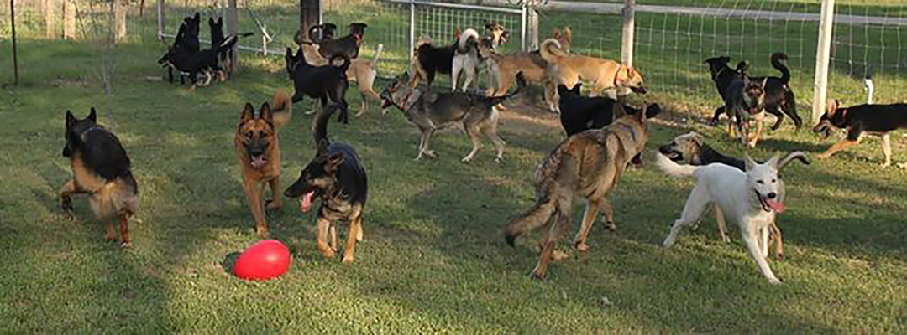
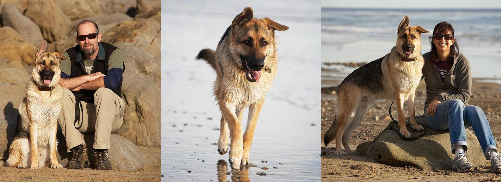

Bogart Update, Nov 5, 2019

I've attached several pictures of "Bogart" aka "Bogie" (formerly Rogue) from the past couple of weeks. He's just doing so very well adapting to the family. He spent the better part of this past weekend enthusiastically chasing bubbles! He's still very much a puppy with tons of energy. He crashes hard at the end of the day and really sleeps hard for what seems to be the whole night. He loves to chew and is learning to try and chew only the right things.... when he forgets and chews on some of the kids' toys, well, we are seeing it as an opportunity to help clear out some of the unused toys! Thanks again for everything you guys do there! We are just so happy to have Bogart in our family. Juliana & David
Coco & Rose Update, Oct 15, 2019

Just wanted to send you an updated picture of Bella (aka Coco) and Juno (aka Rose). Girls are getting big and doing great. They really love each other and sleep together every night in a beanbag chair at the foot of our bed. Soon we will have to get two because they won’t fit it in much longer. Bella is about 30 lbs now, Juno 35 lbs. Vet says they are doing well…eating lots of puppy food and love to play in the yard, sleep and chew on their new xmas puppy toys. My daughters walk them a lot and they are well trained. They like to dig holes in the back yard, bury stuff and play nascar around the furniture. It’s fine entertainment. LOL. Happy to say all is well in the house and we love them dearly. Sometimes I think they wonder why we hug them so much…they have brought us so much joy. Wishing you a happy new year…thanks for making ours! Kelli
Lobo Update, Dec 10, 2019
Lobo went to the beach for what Mike and I think was his first time. He was a little apprehensive of the water at first but it didn't take long for him to run right into the waves. It was a great way to spend New Year's Day. As his fears slowly start to subside, we're seeing a kind and gentle soul shine through. He's a wonderful dog and truly a daddy's boy. Happy New Year. Wishing you all the best in 2020. Wendi